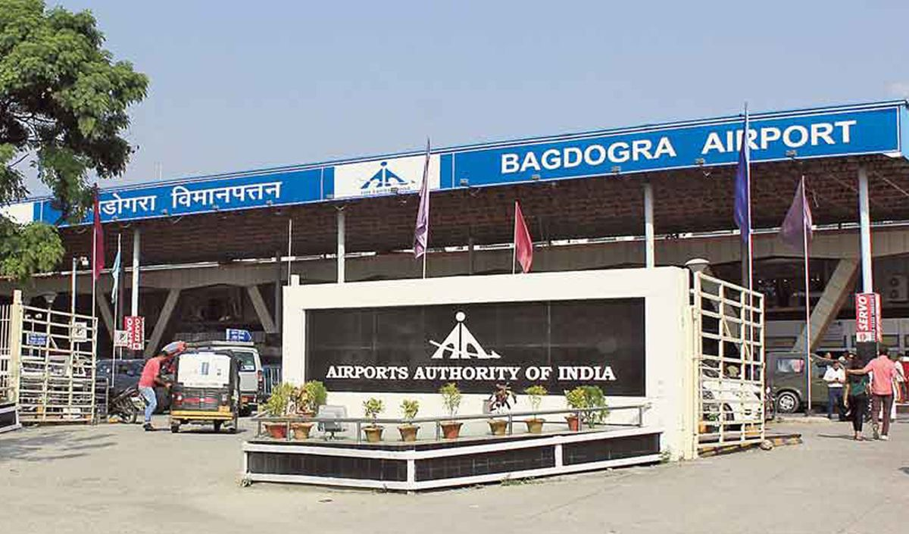
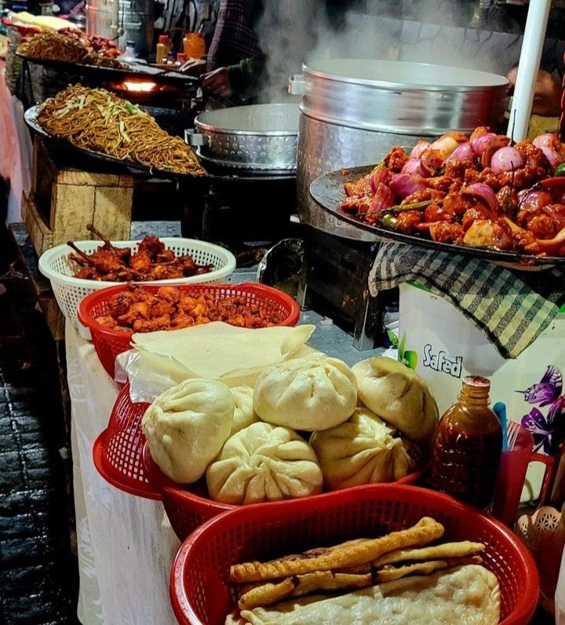
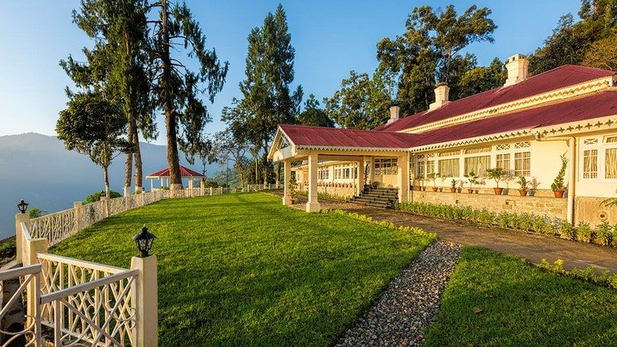
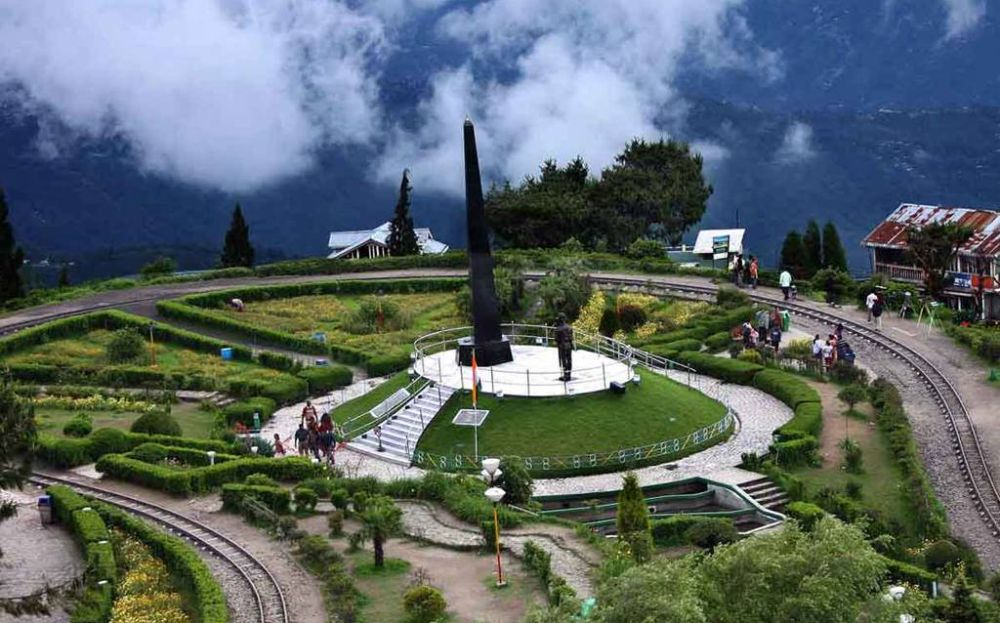
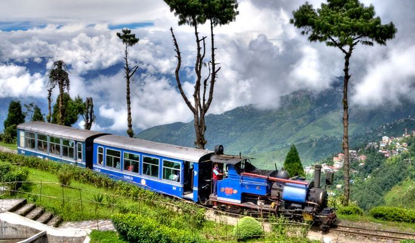
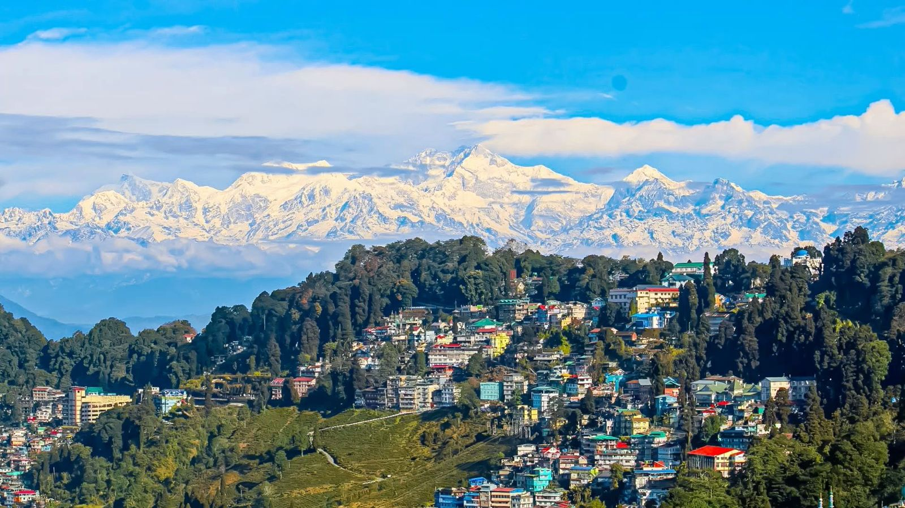
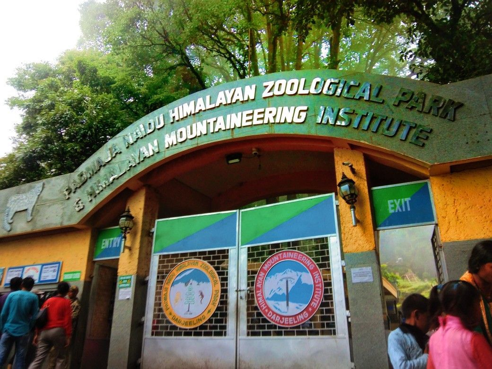

Darjeeling

Darjeeling, known as the "Queen of the Hills," is famous for its tea gardens, scenic views, and the iconic Darjeeling Himalayan Railway (a UNESCO World Heritage Site).
Fun Facts:
- Home to the world's oldest mountain railway.
- Famous for Darjeeling tea, exported worldwide.
- Offers breathtaking views of Mount Kanchenjunga.
How to Reach:
-  By Air: Nearest airport is Bagdogra, about 70 km away.
- By Train: New Jalpaiguri is the nearest major railway station.
- By Road: Well-connected by road from Siliguri and other nearby towns.
Best Time to Visit:
The best time to visit Darjeeling is from March to June and September to November when the weather is pleasant and ideal for sightseeing.
Local Cuisine:
-  Try the local momos (dumplings) and thukpa (noodle soup).
- Enjoy the famous Darjeeling tea at local tea estates.
- Sample traditional Bengali sweets like sandesh and rasgulla.
Accommodation:
-  Luxury: Mayfair Darjeeling, Windamere Hotel.
- Mid-range: Hotel Seven Seventeen, The Elgin.
- Budget: Hotel Broadway, Hotel Hill Crown.
Local Attractions:
- Visit the Tiger Hill for a stunning sunrise view over Kanchenjunga.
-  Explore the Batasia Loop and Ghoom Monastery.
-  Take a ride on the Darjeeling Himalayan Railway.
-  The Peace Pagoda and Japanese Temple.
-  Visit the Padmaja Naidu Himalayan Zoological Park to see rare Himalayan species.